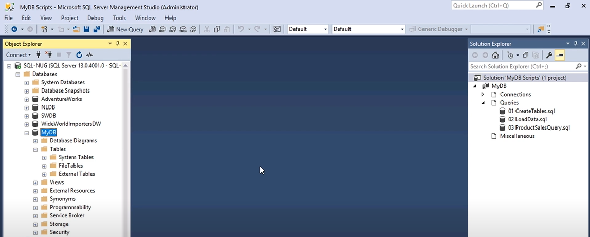

SQL is the standard language when it comes to creating a database. You'll have to download SQL and the SQL Server Management Studio (SSMS). SSMS is the software used to manage any SQL infrastructure.
Launch the SSMS. Locate the Databases folder on the left-hand side of the screen under Object Explorer. Click on the New Database option, name it, and press Ok.
To create a database object, click on the plus sign to the left of your database's name under the Object Explorer. Click the plus again on the Tables folder. Your Object Explorer should look like this:

There are two options to create you tables:
Create a SQL script and write CREATE TABLE in the first line of your code. Don't forget
to capitalize
it! This phrase is called the data definition language, it's how you let the system know you're
creating
a table.
Once you've created your tables, hit the Execute button and your tables will appear in the Tables folder.
Create another SQL script to load data with insert statements for each of your tables. Executing that script will load the data into your already created tables.
After writing the table and load data scripts, you have to write a query to make use of and retrieve your data.
A query pulls the data from your tables. For example, if we used a query that said SHOW TABLES in
NewEngland;, we would find that we have tables
for each state in New England: people_connecticut, people_maine, people_massachusetts,
people_newhampshire, people_rhodeisland, and people_vermont.
THe following are some of the most important and common commands in SQL for all of your scripts:
Once you're done with your query, execute that file and the results will appear in the bottom-most window. And with that, you've created a simple database! Good on you.